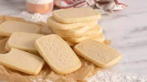

Return to home page
Shortbread Recipe

Description
Shortbread or shortie is a traditional Scottish biscuit usually
made from one part white sugar, two parts butter, and three to
four parts plain wheat flour. Unlike many other biscuits and baked
goods, shortbread does not contain any leavening, such as baking
powder or baking soda.
Ingredients
- 1/4 cup white sugar
- 1/2 cup unsalted butter
- 1 cup all-purpose flour
- 1/3 cup white rice flour
Steps
- Preheat oven to 325 degrees F.
-
Line a baking sheet with parchment paper. Sift flour and rice flour
into a medium mixing bowl. Add the sugar and mix.
-
Cut the butter into pieces and rub into the flour with fingers until
mixture begins to bind. Knead into a soft dough.
-
Roll the dough into an 8 inch round. Place on baking sheet and prick top
with a fork while making tine marks along edge. Using a knife, score the top
with wedge marks.
-
Bake for 45 minutes or until pale golden in color. Sprinkle some superfine
sugar over top and cool. Cut into wedges.